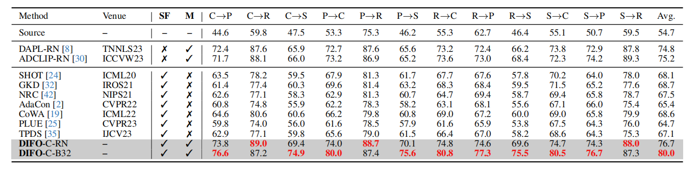
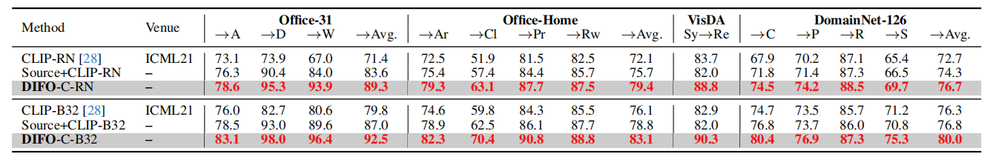
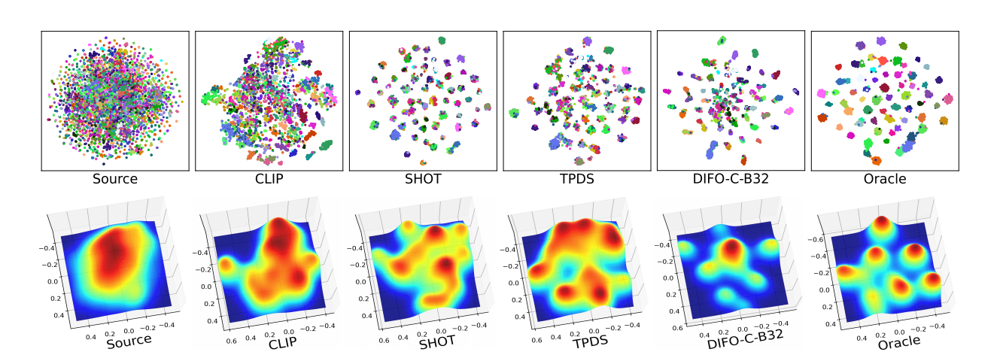

Source-Free Domain Adaptation (SFDA) aims to adapt a source model for a target domain, with only access to
unlabeled target training data and the source model pretrained on a supervised source domain. Relying on pseudo
labeling and/or auxiliary supervision, conventional methods are inevitably error-prone. To mitigate this limitation,
in this work we for the first time explore the potentials of off-the-shelf vision-language (ViL) multimodal models (e.g.,
CLIP) with rich whilst heterogeneous knowledge. We find that directly applying the ViL model to the target domain in a
zero-shot fashion is unsatisfactory, as it is not specialized for this particular task but largely generic. To make it task spe-
cific, we propose a novel Distilling multImodal Foundation model (DIFO) approach. Specifically, DIFO alternates between two steps during adaptation: (i) Customizing the
ViL model by maximizing the mutual information with the target model in a prompt learning manner, (ii) Distilling
the knowledge of this customized ViL model to the target model. For more fine-grained and reliable distillation, we
further introduce two effective regularization terms, namely most-likely category encouragement and predictive consis-
tency. Extensive experiments show that DIFO significantly outperforms the state-of-the-art alternatives. Code is here.
Overview of DIFO

The process involves two alternating steps. First, we perform (a) task-specific customization of a ViL model through task-specific prompt learning (LTsc).
This is achieved under soft predictive guidance using mutual information maximization. Second, we undertake (b) memory-aware knowledge adaptation,
incorporating two regularizations: most-likely category encouragement (LMCE) predicted by our dynamic memory-aware predictor,
along with the typical predictive consistency (LPC). These regularizations are designed to facilitate a coarse-to-fine adaptation.
Result
Closed-set SFDA on Office-Home and VisDA (%). SF and M means source-free and multimodal, respectively; the full results on VisDA are in Supplementary.

Closed-set SFDA on DomainNet-126 (%). SF and M means source-free and multimodal, respectively.

Results (%) of CLIP and Source+CLIP on the four evaluation datasets. The backbone of CLIP image-encoder in CLP-C-RN and
CLP-C-B32 are the same as DIFO-C-RN and DIFO-C-B32, respectively. The full results are provided in Supplementary

Feature distribution visualization comparison on transfer task Ar→Cl in Office-Home. Oracle is trained on target domain Cl using
the ground-truth labels. Different colors stand for different categories.
